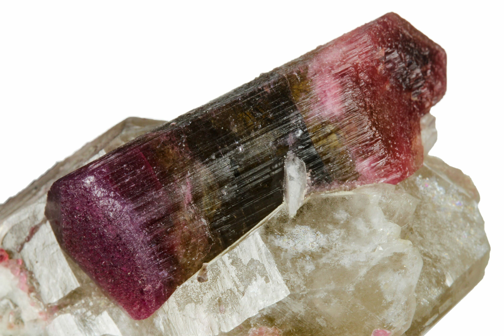

New here?

New to rockhounding and don't know where to start? Not to worry, we will show you the ropes. Click below to head over to our "Getting Started" guide
Getting StartedRocks & Minerals In Maine


Maine's diverse geology provides rockhounds with opportunities to find tourmaline, aquamarine, and amethyst, as well as a rich selection of fossils. The state's pegmatite-rich western region and its coastal areas offer a wealth of collecting sites, such as the Mt. Apatite Park and the Deer Hill locality.
Sponsored Dig Site

Own a digsite you would like to advertize in Maine? Contact us for more information about being our sponsor of the month! Email sponsors@rockhounding.org for more information.
Dig With UsPopular Rocks In Maine
-

Tourmaline
Maine is famous for its colorful tourmaline crystals, which are found in various locations throughout the state. The rich hues of green, pink, and blue make these crystals highly sought-after by collectors.
Read More -
 Amazonite
AmazoniteAmazonite, a vibrant green variety of microcline feldspar, can be found in Maine. The striking color of this mineral has made it popular among collectors and lapidary enthusiasts alike.
Read More -
 Beryl
BerylBeryl, a mineral that occurs in various colors such as green, blue, and yellow, is found in Maine. The famous Mount Apatite area has produced beautiful specimens of aquamarine and heliodor.
Read More -
 Rose Quartz
Rose QuartzMaine is known for its stunning rose quartz, which has a soft pink hue and is often used for ornamental and jewelry purposes. The state has a rich history of quartz mining, with several locations yielding exceptional specimens.
Read More -
 Smoky Quartz
Smoky QuartzSmoky quartz, a brownish-gray variety of quartz, can be found in Maine. This intriguing mineral is sought after for its unique color and transparency, making it a popular choice for collectors.
Read More -
 Garnet
GarnetGarnet, a group of silicate minerals that come in various colors, can be found in Maine. The state is particularly known for producing high-quality almandine garnets, which are prized for their deep red color and unique crystal forms.
Read More -
 Trilobite
TrilobiteMaine is home to a variety of trilobite fossils, which are remnants of ancient marine arthropods. Fossil collectors can find these fascinating relics in sedimentary rocks throughout the state, offering a glimpse into Maine's prehistoric past.
Read More -
 Pegmatite
PegmatiteMaine is well-known for its pegmatite deposits, which are coarse-grained igneous rocks containing an abundance of minerals such as feldspar, quartz, and mica. These deposits are a treasure trove for rockhounds, offering a wide variety of specimens to collect and study.
Read More -
 Schorl
SchorlSchorl, a black variety of tourmaline, is found in several locations in Maine. This mineral is often associated with pegmatite deposits and is known for its distinctive black color and elongated crystal habit.
Read More -
 Lepidolite
LepidoliteMaine is home to lepidolite, a lithium-rich mica mineral known for its vibrant purple color. This mineral can be found in pegmatite deposits throughout the state and is popular among collectors for its unique appearance and rarity.
Read More
Popular Areas In Maine
-
 Mount Apatite Park
Mount Apatite ParkMount Apatite Park in Auburn, Maine, is a popular destination for rockhounding enthusiasts. Visitors can search for minerals like tourmaline, quartz, and feldspar, as well as collect gemstones such as beryl and garnet.
Read More -
Deer Hill Mineral Collecting Area
Deer Hill Mineral Collecting Area in Stow, Maine, offers rockhounding enthusiasts the opportunity to search for minerals like amethyst, smoky quartz, and garnet, as well as various pegmatite minerals.
Read More -
Harvard Quarry
Harvard Quarry in Maine is a popular location for rockhounding enthusiasts to search for minerals like tourmaline, lepidolite, and spodumene in the granite pegmatite formations exposed in the quarry.
Read More -
Geary Quarry
Geary Quarry in North Jay, Maine, is a popular spot for rockhounding, where visitors can find white granite, popularly known as "North Jay White," which has been used for various construction projects and monuments.
Read More -
Poland Mining Camps
Poland Mining Camps in Poland, Maine, provide rockhounding enthusiasts with the opportunity to search for various minerals like tourmaline, quartz, and beryl, as well as learn about the history of mining in the area.
Read More -
Western Maine Mineral Adventures
Western Maine Mineral Adventures in Woodstock, Maine, offers guided rockhounding tours to help visitors find minerals such as tourmaline, quartz, and garnet, as well as learn about Maine's rich mineral history.
Read More
Geology of Maine
Maine's geologic history is characterized by a series of mountain-building events and continental collisions, beginning over 1 billion years ago. The state's bedrock is comprised primarily of metamorphic and igneous rocks, formed during the Precambrian and Paleozoic eras.
Throughout the Paleozoic Era, Maine experienced multiple orogenies, including the Taconic, Acadian, and Alleghenian, which resulted in the formation of the Appalachian Mountains. During the Ice Age, the state was covered by glaciers, which carved its coastline and left behind numerous glacial features, such as moraines and drumlins.